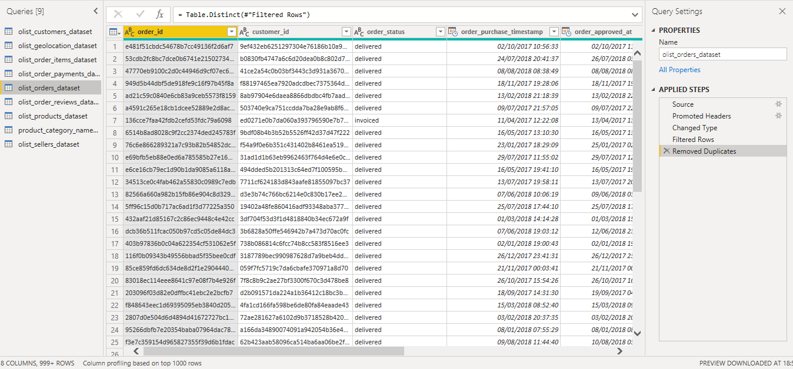
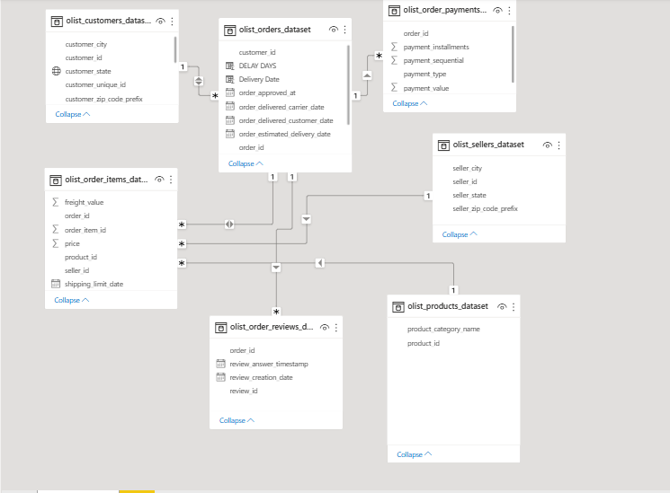
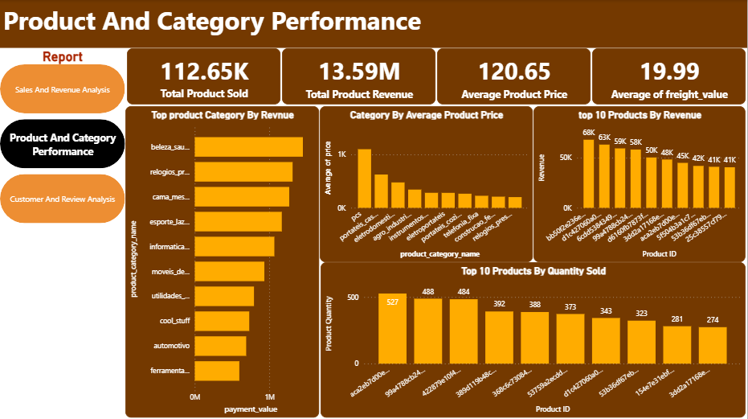
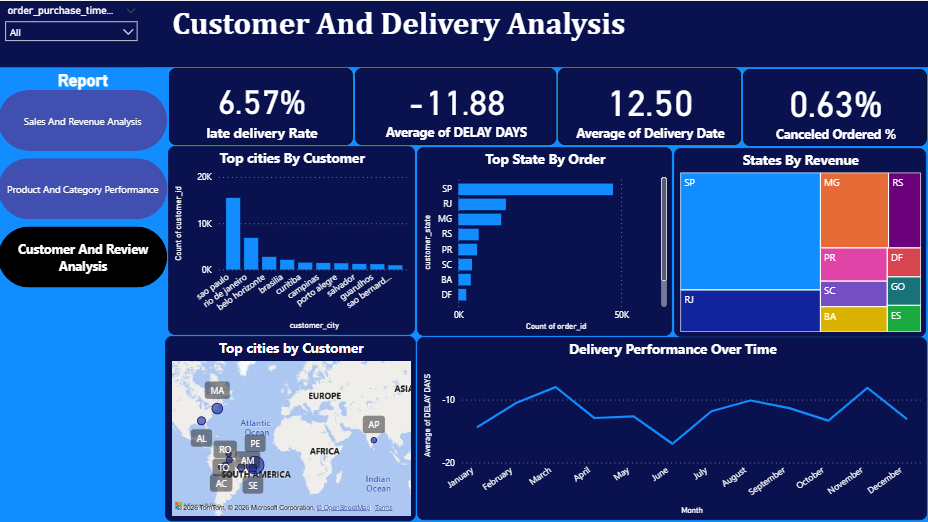

POWER BI PROJECT
E-Commerce Sales & Operations Analysis
An interactive analysis exploring sales performance, product and category performance, customer activity, order trends, and delivery operations.
PROJECT OVERVIEW
Understanding the business from multiple angles
This project analyzes an e-commerce dataset to understand revenue generation, order activity, product performance, customer activity, and delivery operations. The analysis combines multiple business areas into interactive Power BI dashboards to make performance patterns easier to explore and interpret.
DATA STRUCTURE
Understanding the tables behind the analysis
The project uses multiple related Olist tables. Each table provides a different part of the e-commerce process, from customers and orders to products, sellers, payments, and reviews.
olist_customers_dataset
Customer information and location.
olist_orders_dataset
Order status, timestamps, and delivery information.
olist_order_items_dataset
Products and sellers associated with each order.
olist_order_payments_dataset
Payment method and payment value information.
olist_order_reviews_dataset
Customer review and rating information.
olist_products_dataset
Product and category information.
olist_sellers_dataset
Seller identity and location information.
DATA PREPARATION
Cleaning and preparing the Olist data
I used Power Query to prepare the raw Olist tables before bringing them into the Power BI data model. The preparation process included reviewing the source data, promoting headers, changing data types, filtering records, and removing duplicates where required.
Source
Loaded the individual Olist datasets into Power Query.
Data Types
Reviewed and assigned appropriate data types to the columns used for analysis.
Filtering
Applied filtering steps where necessary to prepare the data for reporting.
Duplicates
Checked and removed duplicate records where appropriate during preparation.

DATA MODELING
Connecting the data for analysis
After preparing the individual datasets, I connected the tables in Power BI using their shared keys. This created a relational model that allowed sales, products, customers, sellers, payments, reviews, and delivery information to be analyzed together.

Customers → Orders
The customer_id connects
olist_customers_dataset to
olist_orders_dataset.
One customer can be associated with multiple
orders, allowing customer information to be
analyzed alongside order activity.
Orders → Order Items
The order_id connects orders to
the individual items within each order.
This allows order-level information to be combined
with product quantity, price, freight, and seller data.
Products → Order Items
The product_id connects products
to order items.
This makes it possible to analyze product and
category performance using the sales records
associated with each product.
Sellers → Order Items
The seller_id connects sellers
to the products they sold.
This allows seller and location information
to be analyzed alongside order-item activity.
Orders → Payments
The order_id connects payment
records to their corresponding orders.
This allows payment values, payment types,
and installments to be analyzed at the order level.
Orders → Reviews
The order_id connects customer
reviews to the orders they relate to.
This allows review scores and review activity
to be analyzed alongside order information.
THE BUSINESS QUESTIONS
What was I trying to understand?
Sales Performance
How much revenue is being generated and how are sales changing across time, payment methods, and locations?
Product Performance
Which products and categories contribute most to sales and product volume?
Customer & Delivery
How are customer IDs distributed across orders, and what does delivery performance reveal about the overall order process?
01 — SALES & REVENUE
Sales & Revenue Analysis

KEY METRICS
Sales at a glance
02 — PRODUCT & CATEGORY PERFORMANCE
Product & Category Performance

KEY METRICS
Understanding product performance
03 — CUSTOMER & DELIVERY
Customer & Delivery Analysis

KEY METRICS
Customer and delivery performance
Delivery timing
The negative average delivery variance indicates that, on average, orders were delivered earlier than their expected delivery date.
MY APPROACH
From raw data to business insights
Data Preparation
Prepared and transformed the Olist datasets in Power Query, including data type changes, filtering, and duplicate checks.
Data Modeling
Connected customers, orders, order items, products, sellers, payments, and reviews using their shared keys.
Analysis
Created DAX measures to evaluate revenue, orders, product performance, customer activity, and delivery performance.
Visualization
Built interactive Power BI dashboards to communicate business performance through KPIs, trends, and comparisons.
Tools Used
PROJECT SUMMARY
A complete view of e-commerce performance
This project brought together sales, product, customer, and delivery data to create a broader view of e-commerce performance. The dashboards make it possible to explore revenue, order activity, product performance, customer IDs, and delivery outcomes from different perspectives.